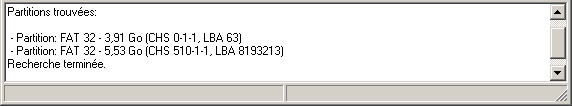
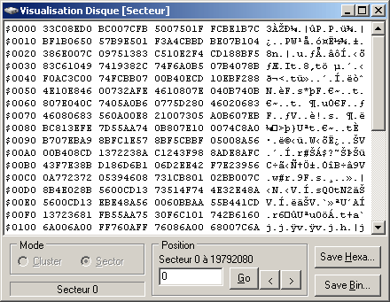

Une fois le disque sélectionné, il faut choisir la partition à analyser. Plusieurs méthodes sont disponibles pour définir une partition :
Sélectionnez le menu pour afficher la boîte de dialogue de
sélection de partition.
Permet de choisir une partition à analyser dans la liste des partitions trouvées et supportées (FAT 32) sur le disque. Si la partition n'est pas dans la liste, cela veut dire qu'elle n'est pas supportée ou qu'elle n'existe pas dans la table des partition (table corrompue). Il faut la sélectionner à partir de son numéro de secteur ou en mode expert.
Dans ce cas, il faut connaître le numéro du secteur
où
commence la partition. Cette information peut être
retrouvée si l'utilisateur a au préalable
sauvegardé les informations sur la partition
ou la table des
partitions. Il est possible de récupérer cette
information en faisant une recherche de partition.
Cette option est utile si la partition n'est pas
dans la liste dans partitions supportées (par exemple: si la
table des
partitions corrompue).
Attention: ce mode nécessite une connaissance
précise des valeurs à saisir ; soit à
partir d'informations sauvegardées au
préalable ou par déduction après analyse manuelle
du disque).
Cette option est utile dans le cas où le boot sector de la
partition et son backup ne sont pas
valides, ce qui empêche un calcul automatique de ces valeurs.
A moins que vous ne connaissiez la valeur exacte des champs et , laissez les valeurs par défaut (respectivement coché et 32).
Si vous ne connaissez pas la taille de la FAT, laissez le champ vide, le programme le calculera à partir des autres informations (ce calcul de base sur l'hypothèse que la partition a été formatée avec la taille des clusters par défaut).
Cliquez sur OK pour valider votre choix. Une fois que la partition est sélectionnée, un message s'affiche dans la zone de message.
Si la table des partitions est endommagée, il est possible de rechercher les partitions existantes avec . Cette option va lire les secteurs du disque pour rechercher les en-têtes de partitions. Cette opération peut prendre plusieurs minutes selon la taille du disque.
Les partitions trouvées sont affichées dans la zone de messages.

Pour avoir des informations détaillées sur la partition allez dans le menu Partition/Partition Info....
Il est possible de sauvegarder ces informations dans un fichier
texte en cliquant sur le bouton Save. La sauvegarde de ces informations
sur un support externe permet de faciliter la
récupération ultérieure.
Il est possible d'afficher le contenu (hexa et ASCII) d'un cluster
ou d'un secteur spécifique avec le menu Selon que l'on veut afficher des secteurs ou
des
clusters, il faut sélectionner le mode correspondant.

Entrez un numéro de secteur ou cluster dans champ position et cliquer sur le bouton (les bornes max et min valides sont indiqués au dessus du champ position). Avec les boutons < et >, on peut passer au secteur/cluster précédent et suivant.
En cliquant sur le bouton , vous pouvez sauvegarder dans un
fichier texte le dump hexadécimal affiché à
l'écran du cluster/secteur sélectionné. Le bouton permet de sauvegarder le contenu
binaire du cluster/secteur tel qu'il est présent sur le disque.